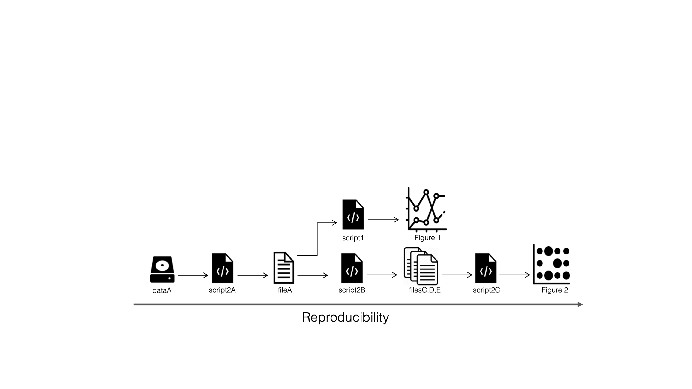

Snakemake workflow manager
NBIS/ELIXIR-SE Tools for Reproducible Research
Making reproducible workflows with

Why do we need workflow managers?
Why do we need workflow managers?
- As projects grow or age, it becomes increasingly difficult to keep track of all the parts and how they fit together.
Why do we need workflow managers?
- As projects grow or age, it becomes increasingly difficult to keep track of all the parts and how they fit together.
Why do we need workflow managers?
- As projects grow or age, it becomes increasingly difficult to keep track of all the parts and how they fit together.
Why do we need workflow managers?
- As projects grow or age, it becomes increasingly difficult to keep track of all the parts and how they fit together.
- A workflow manager helps you scale up both in complexity and dataset size
Workflow managers
Most common
- Snakemake
- Nextflow
Others
- Makeflow
- Bpipe
- Pachyderm
Snakemake workflows
- automatically track input/output file dependencies
- are built from rules
- are generalized with wildcards
- use a Python-based definition language
- easily scale from laptops to HPC clusters
Reproducible…

…and scalable workflows

Example: sequence trimming
Goal: Create workflow to trim and compress fastq-files
./
├── a.fastq
└── b.fastqExample: sequence trimming
Using a bash-script:
for input in *.fastq
do
sample=$(echo ${input} | sed 's/.fastq//')
# 1. Trim fastq file (trim 5 bp from left, 10 bp from right)
seqtk trimfq -b 5 -e 10 $input > ${sample}.trimmed.fastq
# 2. Compress fastq file
gzip -c ${sample}.trimmed.fastq > ${sample}.trimmed.fastq.gz
# 3. Remove intermediate files
rm ${sample}.trimmed.fastq
done$ bash trimfastq.shExample: sequence trimming
Using snakemake rules:
$ snakemake -c 1 {a,b}.trimmed.fastq.gz
Provided cores: 1
Rules claiming more threads will be scaled down.
Job counts:
count jobs
2 gzip
2 trim_fastq
4
rule trim_fastq:
input: a.fastq
output: a.trimmed.fastq
wildcards: sample=a
1 of 4 steps (25%) done
rule gzip:
input: a.trimmed.fastq
output: a.trimmed.fastq.gz
wildcards: sample=a
Removing temporary output file a.trimmed.fastq.
2 of 4 steps (50%) done$ snakemake -c 1 {a,b}.trimmed.fastq.gz
Provided cores: 1
Rules claiming more threads will be scaled down.
Job counts:
count jobs
2 gzip
2 trim_fastq
4
rule trim_fastq:
input: a.fastq
output: a.trimmed.fastq
wildcards: sample=a
1 of 4 steps (25%) done
rule gzip:
input: a.trimmed.fastq
output: a.trimmed.fastq.gz
wildcards: sample=a
Removing temporary output file a.trimmed.fastq.
2 of 4 steps (50%) done
rule trim_fastq:
input: b.fastq
output: b.trimmed.fastq
wildcards: sample=b
3 of 4 steps (75%) done
rule gzip:
input: b.trimmed.fastq
output: b.trimmed.fastq.gz
wildcards: sample=b
Removing temporary output file b.trimmed.fastq.
4 of 4 steps (100%) doneGetting into the Snakemake mindset
From the Snakemake documentation:
- “A Snakemake workflow is defined by specifying rules in a Snakefile.”
- “Rules decompose the workflow into small steps.”
- “Snakemake automatically determines the dependencies between the rules by matching file names.”
- By themselves, rules only define what files can be generated
- By themselves, rules only define what files can be generated
- The actual rules to run are determined automatically from the files you want, so called targets
$ snakemake -c 1 {a,b}.trimmed.fastq.gz- By themselves, rules only define what files can be generated
- The actual rules to run are determined automatically from the files you want, so called targets
$ snakemake -c 1 a.trimmed.fastq.gz- By themselves, rules only define what files can be generated
- The actual rules to run are determined automatically from the files you want, so called targets
- It can therefore be helpful to think of Snakemake workflows in a bottom-up manner, starting with the output
- By themselves, rules only define what files can be generated
- The actual rules to run are determined automatically from the files you want, so called targets
- It can therefore be helpful to think of Snakemake workflows in a bottom-up manner, starting with the output
- If no target is passed at the command line, Snakemake will use the first defined rule in the Snakefile as a target
rule all:
input:
"a.trimmed.fastq.gz",
"b.trimmed.fastq.gz"
rule trim_fastq:
output: temp("{sample}.trimmed.fastq")
input: "{sample}.fastq"
shell:
"seqtk trimfq -b 5 -e 10 {input} > {output}"
rule gzip:
output: "{sample}.trimmed.fastq.gz"
input: "{sample}.trimmed.fastq"
shell:
"gzip -c {input} > {output}"How does Snakemake keep track of what files to generate?
Example from the practical tutorial
- The tutorial contains a workflow to download and map RNA-seq reads against a reference genome.
- The tutorial contains a workflow to download and map RNA-seq reads against a reference genome.
- Here we ask for results/supplementary.html, which is an R Markdown report generated by the rule
make_supplementary:
$ snakemake -c 1 results/supplementary.html- The tutorial contains a workflow to download and map RNA-seq reads against a reference genome.
- Here we ask for results/supplementary.html, which is an R Markdown report generated by the rule
make_supplementary: - If the timestamp of a file upstream in the workflow is updated…
$ touch intermediate/NCTC8325.1.bt2 - The tutorial contains a workflow to download and map RNA-seq reads against a reference genome.
- Here we ask for results/supplementary.html, which is an R Markdown report generated by the rule
make_supplementary: - If the timestamp of a file upstream in the workflow is updated…
- Snakemake detects a file change and only reruns the necessary rules.
$ snakemake -c 1 results/supplementary.htmlAnatomy of a Snakemake rule
- rules are typically named and have input and/or output directives
- rules are typically named and have input and/or output directives
- logfiles help with debugging and leave a “paper trail”
- rules are typically named and have input and/or output directives
- logfiles help with debugging and leave a “paper trail”
- params can be used to pass on settings
- rules are typically named and have input and/or output directives
- logfiles help with debugging and leave a “paper trail”
- params can be used to pass on settings
- the
threadsdirective specify maximum number of threads for a rule - you can also define
resourcessuch as disk/memory requirements and runtime
rule trim_fastq:
output: temp("{sample}.trimmed.fastq")
input: "{sample}.fastq"
log: "logs/{sample}.trim_fastq.log"
params:
leftTrim=5,
rightTrim=10
threads: 8
resources:
mem_mb=64,
runtime=120
shell:
"""
seqtk trimfq -t [threads} -b {params.leftTrim} -e {params.rightTrim} {input} > {output} 2> {log}
"""- rules are typically named and have input and/or output directives
- logfiles help with debugging and leave a “paper trail”
- params can be used to pass on settings
- the
threadsdirective specify maximum number of threads for a rule - you can also define
resourcessuch as disk/memory requirements and runtime - rules can be executed in separate software environments using either the
condaorcontainerdirective
rule trim_fastq:
output: temp("{sample}.trimmed.fastq")
input: "{sample}.fastq"
log: "logs/{sample}.trim_fastq.log"
params:
leftTrim=5,
rightTrim=10
threads: 8
resources:
mem_mb=64,
runtime=120
conda: "envs/seqtk.yaml"
container: "docker://quay.io/biocontainers/seqtk"
shell:
"""
seqtk trimfq -t [threads} -b {params.leftTrim} -e {params.rightTrim} {input} > {output} 2> {log}
"""- rules are typically named and have input and/or output directives
- logfiles help with debugging and leave a “paper trail”
- params can be used to pass on settings
- the
threadsdirective specify maximum number of threads for a rule - you can also define
resourcessuch as disk/memory requirements and runtime - rules can be executed in separate software environments using either the
condaorcontainerdirective
rule trim_fastq:
output: temp("{sample}.trimmed.fastq")
input: "{sample}.fastq"
log: "logs/{sample}.trim_fastq.log"
params:
leftTrim=5,
rightTrim=10
threads: 8
resources:
mem_mb=64,
runtime=120
conda: "envs/seqtk.yaml"
container: "docker://quay.io/biocontainers/seqtk"
shell:
"""
seqtk trimfq -t [threads} -b {params.leftTrim} -e {params.rightTrim} {input} > {output} 2> {log}
"""envs/seqtk.yaml
See more in the Snakemake documentation
https://snakemake.readthedocs.io/en/stable/snakefiles/rules.html
Snakemake commandline
- Generate the output of the first rule in Snakefile
$ snakemake -s Snakefile- Run the workflow in dry mode and print shell commands
$ snakemake -n -p- Execute the workflow with 8 cores
$ snakemake --cores 8- Specify a configuration file
$ snakemake --configfile config.yaml- Run rules with specific conda environments
$ snakemake --use-conda- Run rules with specific Singularity or Docker containers
$ snakemake --use-singularityQuestions?
NBIS Reproducible research - Snakemake